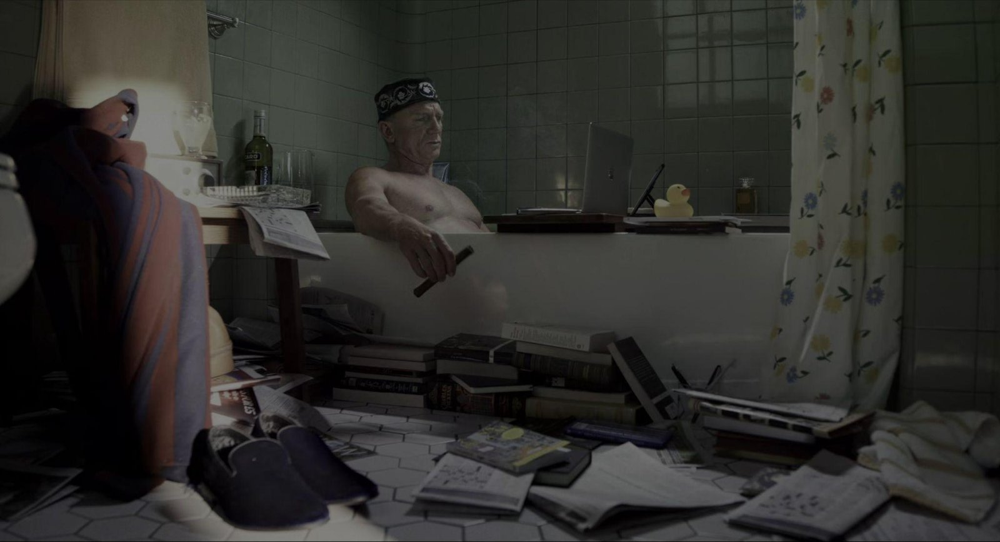
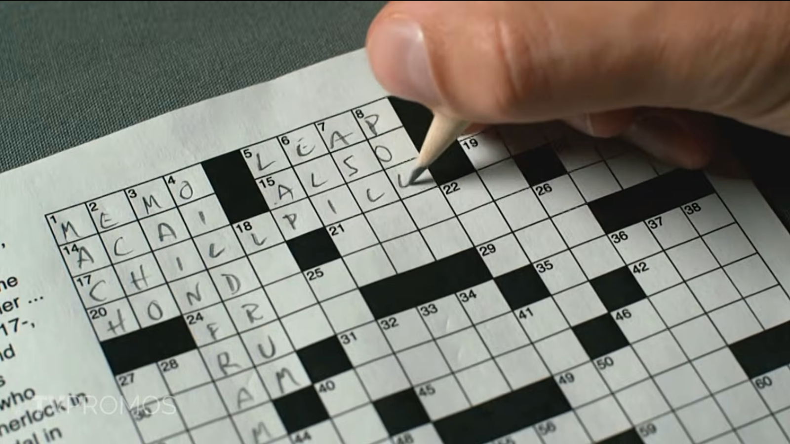
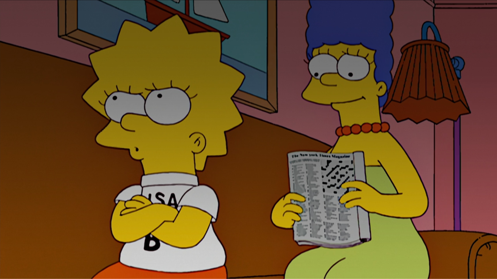

Gridspotting
Crosswords seen on screen, in movies, TV and ads, traced back to the puzzles they came from.







Crosswords seen on screen, in movies, TV and ads, traced back to the puzzles they came from.


